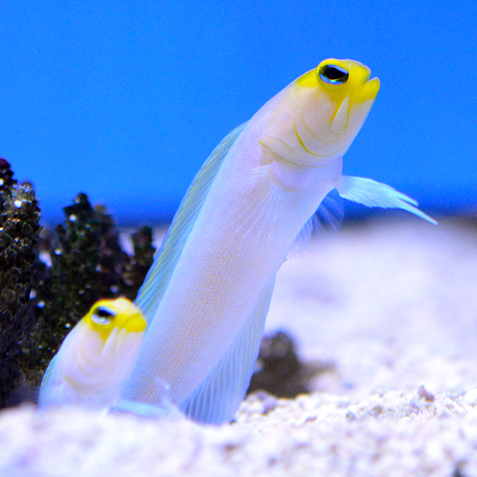

This guy is a jawfish!!! He's a mouth-brooder, which is an animal that keeps their eggs in their mouth until they're ready to hatch, for safe keeping. I think he's really cute, because I once saw him digging a burrow by getting a mouthful of sand and spitting it outx10. To eat, this guy deposits his eggs somewhere safe. After he's done eating, he comes back for the eggs and proceeds as normal until they hatch!!